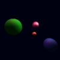

Flux
This is a place to connect you to the VRML universe.
Currently, the links included are those that support the TVP
(Terra Vista Protocal). Later, other links will be added to other
VRML sites. Since Flux supports TVP, those links will be appropriately
labeled.
Enter
